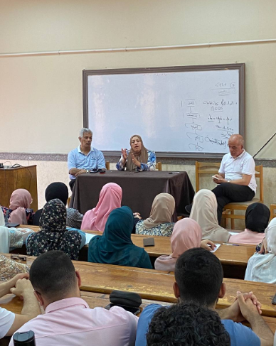
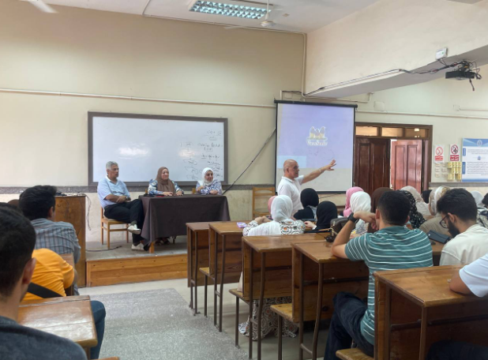
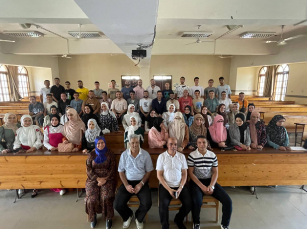
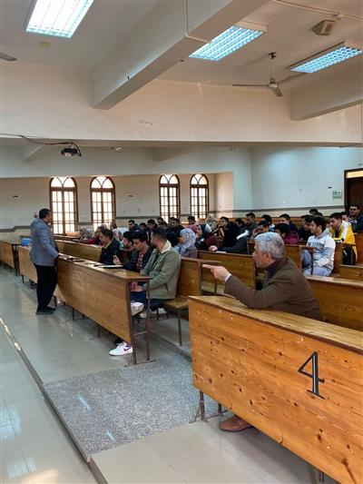
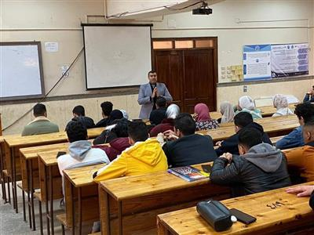
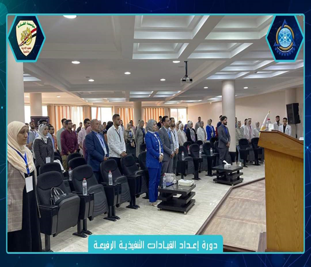
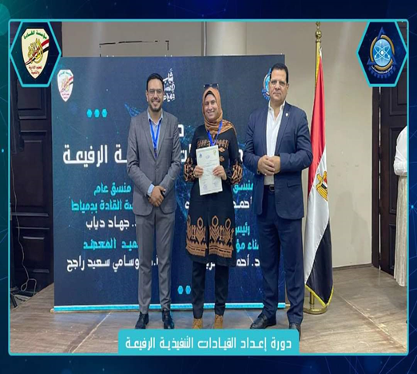

محاضرة عن افهم تخصصك وابدأ طريقك المهني بثقة
للمحاضر المهندس اسلام المحلاوى - مهندس عمليات بخبرة متميزة في مجالات الصناعات الكيميائية ومعالجة المياه تحت رعاية: الأستاذ وليد خطاب - رئيس مجلس إدارة المعهد ، أ.د. خالد فوزي خليل - عميد المعهد ، أ.م.د. هند جادو - رئيس قسم الهندسة الكيميائية
المحاور الأساسية للدورة :-
- أهداف الدورة
- الفرق بين تخصصات الهندسة الكيميائية وكيفية اختيار المسار الأنسب.
- فرص العمل داخل مصر وخارجها للمهندسين الكيميائيين.
- كيفية اجتياز أي مقابلة عمل (Interview) بثقة واحتراف.
- المهارات المطلوبة في سوق العمل وكيفية تطويرها.
- كيف تبرز نفسك وتكون مميزًا في بيئة العمل.
- نبذة عن صناعة المنظفات ومستحضرات التجميل ودور المهندس الكيميائي فيها.
كل الشكر والتقدير للمهندس إسلام المحلاوي على المحاضرة الثرية
والمميزة التي ألهمت الطلاب ووسعت آفاقهم المهنية.
كما نتوجه بخالص الشكر الى مشرفين وفريق تنظيم Chemical Engineers
Hub على جهودهم الرائعة وتنظيمهم المشرف الذي ساهم في نجاح اللقاء.
خطوة جديدة تضاف إلى إنجازات الأسرة والمعهد نحو دعم طلاب قسم
الهندسة الكيميائية، وتعزيز وعيهم المهني والعلمي.


ندوة بعنوان رحلة المهندس الكيميائي قبل وبعد التخرج
بتاريخ الاثنين الموافق 10نوفمبر 2025 تحت رعاية كلٍّ من: الأستاذ
وليد خطاب – رئيس مجلس إدارة المعهد ، أ.د. خالد فوزي خليل – عميد
المعهد ، أ.م.د. هند جادو – رئيس قسم الهندسة الكيميائية
بتنظيم فريق Chemical Engineers Hub
وأشراف
د. ندى أبو العنين ، م. إياد العسيلي
قدّم المهندس عمرو رشاد حمدي جلسة مميزة أثرت طلاب القسم بخبراته
الواسعة في مجال البترول والبتروكيماويات، وقدّم خلالها نصائح واقعية
ومفيدة عن المهارات المطلوبة، الحياة بعد التخرج، التعامل مع سوق
العمل، والفرق بين الجانب النظري والعملي. كل الشكر للمهندس عمرو
رشاد على المحاضرة القيمة والمحتوى الثري،
والشكر موصول لفريق التنظيم على الجهد الكبير اللي ظهر في نجاح
الندوة. خالص التقدير لمجلس إدارة المعهد على دعمهم المستمر للأنشطة
الطلابية وتسهيل كل ما يلزم لخروج الفعاليات بأفضل صورة.


دورة تدريبية عن استخدام Aspen Hysys
قدم قسم الهندسة الكيميائية بالمعهد العالي للهندسة و التكنولوجيا فرصة مميزة لطلاب وخريجي الهندسة الكيميائية يوم الاربعاء بتاريخ 12 مارس 2025 تحت رعاية أ.د اوسامي سعيد راجح عميد المعهد أ.م.د هند جادو رئيس قسم الهندسة الكيميائية وبالتعاون مع الأسرة العلمية بالقسم Chemical Engineers Hub قدمها المهندس/ احمد الرازقي

محاضرة قوية لطلاب وخريجي الهندسة الكيميائية
اختتمنا اليوم بتاريخ 12 فبراير 2025 محاضرة مميزة مع م. محمد مهدي، اللي شاركنا خبرته العملية والعلمية في مجال الصناعات الكيميائية، النفط والغاز، والـ LNG. المتحدث: "م. مُحمد مهدي"
المؤهلات العلمية :-
- درجة الماجستير في الهندسة الكيميائية – جامعة القاهرة
- باحث دكتوراه في Machine Learning في صناعة الـ LNG
- عضو في ICHEME & معتمد من Aspen
الخبرات المهنية:-
- مهندس تشغيل - Damietta LNG (7+ سنوات)
- مهندس تشغيل - Methanex Corporation (2.5 سنة)
- مهندس تشغيل - TCI Sanmar Petrochemicals (سنة)
- متدرب هندسي - MOPCO (5 شهور)
الخبرات المهنية:-
- مهندس تشغيل - Damietta LNG (7+ سنوات)
- مهندس تشغيل - Methanex Corporation (2.5 سنة)
- مهندس تشغيل - TCI Sanmar Petrochemicals (سنة)
- متدرب هندسي - MOPCO (5 شهور)
- المسار المهني لمهندس العمليات في الصناعات الكيميائية
- الفرق بين التخصصات المختلفة في المجال
- إزاي تدخل مجال Machine Learning في صناعة الـ LNG
- فرص العمل في مصر والخارج
- المهارات المطلوبة لسوق العمل وكيفية تطويرها
ناقشنا خلالها :-
دورة تدريبية عن تقييم الأثر البيئي
تحت إشراف قسم الهندسة الكيميائية بـ المعهد العالي للهندسة والتكنولوجيا بدمياط الجديدة، تم بحمد الله يوم الاثنين الموافق ٢٤/٣/٢٠٢٥ الانتهاء من تنفيذ الدورة التدريبية بعنوان "تقيم الأثر البيئي للمشروعات التنموية" بقيادة أ.م.د. رمضان عبدالغني الكاتب (استشارى تقييم الأثر البيئى بوزارة البيئة المصرية ) ، بمشاركة العديد من الطلاب والخريجين و الأطراف المجتمعية.
المحاور الأساسية للدورة :-
- أهداف الدورة
- مفهوم تقييم الأثر البيئي، ومتى يتم، وكيف يساهم في تحقيق التنمية المستدامة؟
- أهداف تقييم الأثر البيئي
- الإطار القانوني لتقييم الأثر البيئي
- تصنيف المشروعات
- إجراءات تقييم الأثر البيئي
- إعداد نماذج ودراسات تقييم الأثر البيئي للمشروعات المختلفة (أ - ب - ج)
- حالات تطبيقية قام بها المدرب في تقييم الأثر البيئي
- مقترحات السادة المتدربين


ندوة عن آلية اختيار مشروع التخرج وأسس كتابة المشروع
في اطار تعزيز مهارات طلاب قسم الهندسة الكيميائية بالمعهد، وتحت رعاية الاستاذ الدكتور/ اوسامي راجح عميد المعهد والاستاذ الدكتور/هند جادو رئيس قسم الهندسة الكيميائية واستكمالا للجهود التي يبذلها القسم في تنمية مهارات الطلاب،تم اليوم الاثنين 19/8/2024 عقد ندوة عن آلية اختيار مشروع التخرج وأسس كتابة المشروع بحضور كلا من : ا.د.رمضان عبدالغني الكاتب -استشاري بوزارة البيئة وعضو هيئة التدريس بالمعهد
اعضاء هيئه التدريس بالقسم
- د. ياسر توفيق
- د. سهير ابو بكر
- د. ريهام عاطف عبد المولى
- د. ندى ابو العينين



المشروع القومي للحفاظ علي كيان الأسرة "ندوة مودة"
انه في يوم الثلاثاء الموافق 5/3/2024، وبعد موافقة كلاً من (الأستاذ الدكتور/عميد المعهد ، والأستاذ الدكتور/ رئيس قسم الهندسة الكيميائية) ، تم عقد ندوة بعنوان مودة ، وكان الدكتور/ ياسر توفيق "المدرس بقسم الهندسة الكيميائية" محاضرا رئيسيا لهذه الندوة .
ورشة عمل بعنوان Confined Space
إنه في يوم الثلاثاء الموافق 12/2/2024، وبعد موافقة كلاً من (الأستاذ الدكتور/عميد المعهد ، والأستاذ الدكتور/ رئيس قسم الهندسة الكيميائية) ، تم عقد ورشة عمل بعنوان Confined Space، وكان الدكتور/ محمد فكيه المدرس بقسم العلوم الأساسية والهندسية بالمعهد محاضرا رئيسيا لهذه الورشة، وتمثلت محاورة الورشة فيما يلى:
- كيفية التعامل مع الأماكن المغلقة.
- معرفة إجراءات السلامة للعمل داخل الأماكن المغلقة.
- معرفة كيفية العمل مع المخاطر المحتملة وتأمين بيئة العمل.

ندوة السلامة و الصحة المهنية
إنه في يوم الثلاثاء الموافق 27/1/2024، وبعد موافقة كلاً من (الأستاذ الدكتور/عميد المعهد ، والأستاذ الدكتور/ رئيس قسم الهندسة الكيميائية) ، تم عقد ورشة عمل بعنوان السلامة والصحة المهنية، وكان الدكتور/ إبراهيم سميسم "مدرب معتمد بالسلامة والصحة المهنية ومدير إدارة الطوارئ بشركة مياه الشرب بدمياط" محاضرا رئيسيا لهذه الورشة، وتمثلت محاورة الورشة فيما يلى:
- مفهوم السلامة والصحة المهنية
- أهمية قواعد السلامة والصحة المهنية
- إجراءات السلامة والصحة المهنية.


ندوة معالجة المياة
إنه في يوم السبت الموافق 24/1/2024، وبعد موافقة كلاً من (الأستاذ الدكتور/عميد المعهد ، والأستاذ الدكتور/ رئيس قسم الهندسة الكيميائية) ، تم عقد ورشة عمل بعنوان السلامة والصحة المهنية، وكان الدكتور/ إبراهيم سميسم "مدرب معتمد بالسلامة والصحة المهنية ومدير إدارة الطوارئ بشركة مياه الشرب بدمياط" محاضرا رئيسيا لهذه الورشة، وتمثلت محاورة الورشة فيما يلى:
- التعريف بمعالجة المياه.
- توضيح الهدف من معالجة المياه.
- شرح مراحل معالجة المياه.
- التعريف بتكنولوجيا معالجة المياه.
- جزء من فعاليات ندوة معالجة المياه المُقامة بقسم الهـندسة الكيميائية مع المحاضر د.إبراهيم سميسم


ورشة عمل عن كتابة مشروع التخرج
إنه في يوم الإثنين الموافق 22/1/2024، وبعد موافقة كلاً من (الأستاذ الدكتور/عميد المعهد ، والأستاذ الدكتور/ رئيس قسم الهندسة الكيميائية) ، تم عقد ورشة عمل بعنوان كتابة مشروع التخرج ، وكان الدكتور/ ندى أبو العنين "المدرس بقسم الهندسة الكيميائية" محاضرا رئيسيا لهذه الورشة، وتمثلت محاورة الورشة فيما يلى:
- التعريف ما هو مشروع التخرج.
- شرح خطوات إعداد وتنفيذ مشروع التخرج
- تحديد أساسيات كتابة مشروع التخرج.


دورة إعدات القيادات التنفيذية الرفيعة
وبعد موافقة الأستاذ الدكتور/عميد المعهد، تم عقد دورة إعداد القيادات التنفيذية الرفيعة، وذلك يوم السبت الموافق 4/11/2023، ويوم الأحد الموالفق 5/11/2023 بقاعة المؤتمرات الرئيسية بمركز التعليم المدني بمدينة دمياط الجديدة، وتم حصول الدكتوره/ ندى أبو العنيين المدرس بالقسم على الدورة التدريبية، بالإضافة إلى طلاب القسم بالمراحل الأكاديمية المختلفة.

